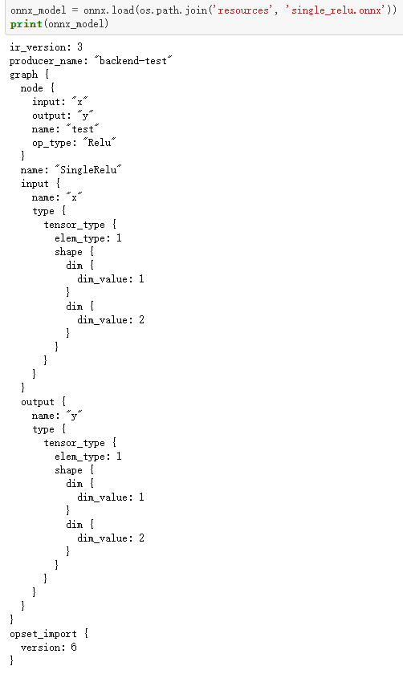

ONNX简明教程
简介¶
onnx将每一个网络的每一层或者说是每一个算子当作节点**Node**，再由这些**Node**去构建一个**Graph**，相当于是一个网络。最后将**Graph**和这个onnx模型的其他信息结合在一起，生成一个**model**，也就是最终的.onnx的模型。
onnx.helper.make_node/make_graph/make_model用于构建模型，onnx.helper.make_tensor_value_info/make_tensor是构建graph所需要的简单结构

常用函数解析¶
onnx.helper.make_node(op_type,inputs,outputs,name=None,doc_string=None,**kwargs)->NodeProto
op_type:节点的算子类型(字符串:Conv,Relu,Add,...)，具体支持类型见onnx支持的算子列表，不要瞎写inputs:存放节点输入的名字(字符串列表，以Conv为例，必有输入X和权重W，偏置B作为可选)outputs:存放节点输出的名字(字符串列表,常常是一个输出)name:节点名，可有可无，不要和op_type搞混了doc_string:描述文档的字符串，这个默认为Nonkwargs:存放节点的属性attributes，常常传入字典类型即可,Conv举例
dict = {"kernel_shape": (7, 7),
"group": 1,#default为1，所以可以不写
"strides": (2, 2),
"auto_pad": "VALID",
"dilations": [1, 1, 1],
"pads": [3, 3, 3, 3]
}#顺序无所谓
node_def = helper.make_node(
NodeType, # 节点名
X_name, # 输入
Y_name, # 输出
**dict
)
onnx.helper.make_graph(nodes,name,inputs,outputs,initializer=None,doc_string=None,value_info=[])→GraphProto
nodes:用make_node生成的节点(NodeProto类型)列表:[node1,node2,node3,…]name:graph的名字(字符串)inputs:存放graph的输入数据信息(ValueInfoProto类型)，make_tensor_value_info生成- 把来自外界的超参数信息和输入数据信息统一放在inputs里
onnx.helper.make_tensor_value_info→ValueInfoProtoname:数据信息名字 [类型:字符串]elem_type:数据类型 [类型:TensorProto.DataType]shape:数据维度(形状) [类型:int列表/元组]doc_string:描述文档的字符串，这个默认为None [类型:字符串]shape_denotation:对shape的描述 [类型:字符串列表],根据数据类型和形状创建一个ValueInfoProto。
outputs:存放graph的输出数据信息(ValueInfoProto类型)，initializer:存放超参数(TensorProto类型:Conv的权重W、偏置B，BatchNormalization的scale、B、mean、var)，make_tensor来转换成TensorProto形式onnx.helper.make_tensor(name,data_type,dims,vals,raw=False)--->TensorProtoname:数据名字，要与该数据的信息tensor value info中名字对应 [类型:字符串]data_type:数据类型 [类型:TensorProto.DataType] 如TensorProto.FLOAT,TensorProto.UINT8、TensorProto.FLOAT16等dims:数据维度 [类型:int列表/元组]vals:数据值，好像要可迭代的 [类型:任意]raw:选择是否用二进制编码 [类型:bool],raw为False的时候，就会用相应的TensorProto来存储基于data_type的值，若raw为True，则是用二进制编码来存储数据。**注：**我发现cntk官方转onnx用的是raw为False的方式，而pytorch官方转onnx用的是raw为True的方式。
doc_string:描述文档的字符串，这个默认为Nonevalue_info:存放中间层产生的输出数据的信息 (ValueInfoProto类型)，注意是信息不是具体数值。
onnx.helper.make_model(graph,**kwargs)：把graph和模型其他信息(ir_version(现在默认是3),....)组合在一起构建出一个完整的onnx model的函数
graph:用make_graph生成的GraphProtokwargs:构建ModelProto中的opset_import
onnx.helper.make_attribute(key,value,doc_string=None)→AttributeProto
key:键值 [类型:字符串]value:数值 [类型:任意]doc_string:描述文档的字符串，这个默认为None [类型:字符串],根据数值类型来创建一个AttributeProto，这个函数用在了make_node里，用于将make_node传入的**kwargs转为AttributeProto形式。
简单使用¶
#1.模型加载和存储
import onnx
onnx_model = onnx.load("xx.onnx") # 模型加载
onnx.save(onnx_model,'re_xx.onnx') # 模型存储
#2.TensorProto(常用来存放参数)和numpy的相互转换
import numpy as np
from onnx import numpy_helper
numpy_array = np.array([[1.0, 2.0, 3.0], [4.0, 5.0, 6.0]], dtype=float)
tensor = numpy_helper.from_array(numpy_array) # TensorProto类型
new_array = numpy_helper.to_array(tensor) # numpy类型
# Save the TensorProto
with open('tensor.pb', 'wb') as f:
f.write(tensor.SerializeToString())
# Load a TensorProto
new_tensor = onnx.TensorProto()
with open('tensor.pb', 'rb') as f:
new_tensor.ParseFromString(f.read())
# 创建模型
import onnx
from onnx import helper
from onnx import AttributeProto, TensorProto, GraphProto
# Create one input (ValueInfoProto)
X = helper.make_tensor_value_info('X', TensorProto.FLOAT, [1, 2])
# Create second input (ValueInfoProto)
Pads = helper.make_tensor_value_info('Pads', TensorProto.INT64, [4])
# Create one output (ValueInfoProto)
Y = helper.make_tensor_value_info('Y', TensorProto.FLOAT, [1, 4])
# Create a node (NodeProto)
node_def = helper.make_node(
'Pad', # node name
['X', 'Pads'], # inputs
['Y'], # outputs
mode='constant', # Attributes
)
# Create the graph (GraphProto)
graph_def = helper.make_graph(
[node_def],
"test-model",
[X, Pads],
[Y],
[helper.make_tensor('Pads', TensorProto.INT64, [4,], [0, 0, 1, 1,])],
)
# Create the model (ModelProto)
model_def = helper.make_model(graph_def,
producer_name='onnx-example')
print('The ir_version in model: {}\n'.format(model_def.ir_version))
print('The producer_name in model: {}\n'.format(model_def.producer_name))
print('The graph in model:\n{}'.format(model_def.graph))
onnx.checker.check_model(model_def)
print('The model is checked!')